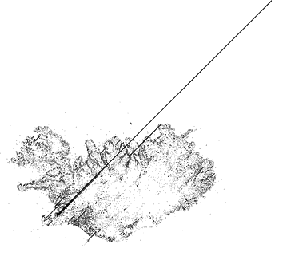

I’ve been spending much of my free time exploring different types of maps. I have a few new ideas and have enlisted the help of some friends to work on atleast three new maps for Iceland and Reykjavik. When those are further along I’ll certainly write more about them, but until then, I can show you a quick and easy example of plotting a map based on other data sets.
Data sets
Geonames is a great repository of geographic information. If you are looking to bootstrap a project, then downloading the free geonames data is an excellent source. It has city names for just about every country. It also has plenty of other geographic data such as boundaries, place names, natural features like streams, rivers, hills, mountains and various other plot-able items.
As a quick demonstration, I pulled down the Geonames data for both Iceland and Great Britain. The data set is just a tab delimited list of entries. Each entry has a name, a feature type and a more specific feature information, along with latitude and longitude. From this, I wrote a very simple and crude PHP script to convert the data from the CSV file to SVG. SVG is scalable vector graphics. It is an XML format that describes vector images. The beauty of SVG is that you can easily create the data in any text editor, then load it up in a vector program such as Adobe Illustrator.
The pseudo-code to do this is as follows:
- Open the file
- Loop through each line of the CSV
- extract the feature type, latitude and longitude
- output the data as a line of SVG
- ???
- Profit!
The SVG equivalent of a data point is a circle. To create a circle in SVG you would use the following:
<circle r="1" cx="100" cy="100" stroke-width="0" fill="#000000" />
That will make a circle with a radius of 1 at an X,Y of 100,100 and fill it in with #000000, black.
Now, you just need to make one line just like that for each row in the Geonames CSV file. I used the Dopplr city colouring algorithm to select a colour for each feature. This made sure that each type resulted in a uniquely reproducible colour. Each feature type is unique, so to convert that to a HEX value, I simply ran it through something like.
$colour = sub-string( md5( $featureType ), 0, 6);
This creates an md5 hash from the $featureType and then only takes the first six characters. This results in a nice random HEX value.
Depending on what country you select, you will need to re-orient the circle’s x and y data points. Iceland is east of the meridian, therefore it has negative values for its longitude. This isn’t a major issue, but it does mean when you open the file in the vector editor, it might be off the art board or even upside-down. A bit of trial and error and it will be sorted in no time.
Even with out the borders, you can distinctly see where the land and sea meet. If you are familiar with Iceland, you can quickly see the populated areas. The green dots are places, this includes towns and farms. The dead-zones are both the interior which is inhospitable and the glaciers where no one lives either. There is plenty of clean-up that can be done to this map, but as a first pass it worked out pretty well.
The results for Great Britain also turned out pretty well. London is visible as is the coast line. The number of light green dots in England is far greater than in the rest of the island. This could be due to the unfarmable rocky highlands or the fact that the Queen is the largest land owner in Scotland?
The images remind me of a quote by Bruce Lee:
Empty your mind, be formless, shapeless – like water. Now you put water into a cup, it becomes the cup, you put water into a bottle, it becomes the bottle, you put it in a teapot, it becomes the teapot. Now water can flow or it can crash. Be water, my friend.
If you look at the maps, there is no border, yet we can clearly see where the land and sea meet. In the cases of Iceland and England, it is obvious. Not so much between Scotland and England, or England and Wales, or Northern Ireland and the non-existant Republic of Ireland. Be formless, like water. Our population has nicely flowed into the shape of the “cup”. In the case of islands, the cup becomes the available land. We have managed to move into just about every crack, crevasse, fjord and field.
As a quick first pass, I am happy with these results. From here it is possible to build-up further. Maybe collect other geographical data points, such as Flickr geotagged photos or geotagged wikipedia posts. Maybe with just those two data sets, I could visualize the outline of Iceland. I doubt it, there isn’t enough people participating in the very small costal areas. Geonames does give you town population data, so maybe the dot representing the city should be larger based on the number of people. Another possibility would be to merge the data with other data sets like weather or crime.
I know that people who deal with geographic data always complain that the world is not a series of dots or red pushpins. They are right, even in these maps, lakes, bays, oceans and other features are represented by a single dot. Where would you put a dot to represent a river? At the start, at the end, in the half-way point? The same problem persists for mountains and cities. Having a series of single lat/lon pairs makes the import and presentation very simple, but isn’t true to life. Ideally, there will be some happy middle ground, because storing and parsing polygons is a big step-up from simple dots.
Scalable Vector Graphics
If you are dealing with mathematical data sets that you want to visualize, then SVG is a very quick and easy way to get started. By creating SVG circles for lat/lon I saved myself loads of time trying to import this into a vector program. SVG can draw lines, boxes, ellipses, and much more. So when you are thinking about graphing or plotting data sets, then SVG could be an excellent intermediary for between the tabular data and your final production ready presentation. The map of England has close to 50,000 data points and was pretty slow to open in Illustrator, but once it was converted it wasn’t a problem. SVG is a fast way to programmatically create scaleable visualization and is an excellent tool to know to improve your toolbox of available utilities to get the job done.